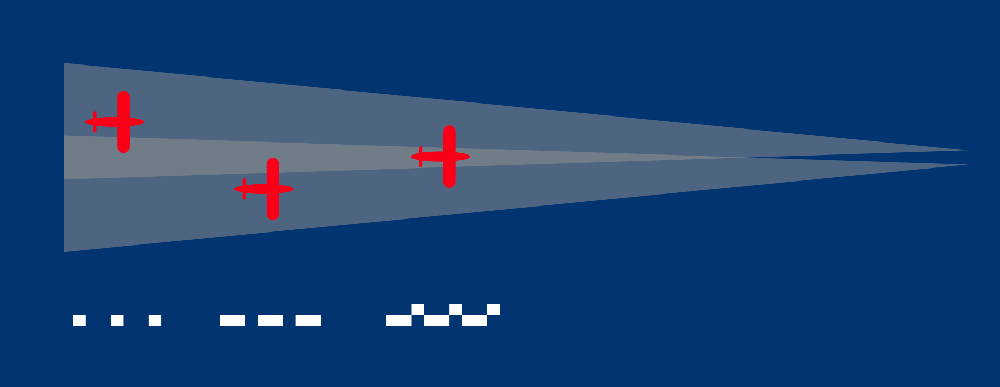
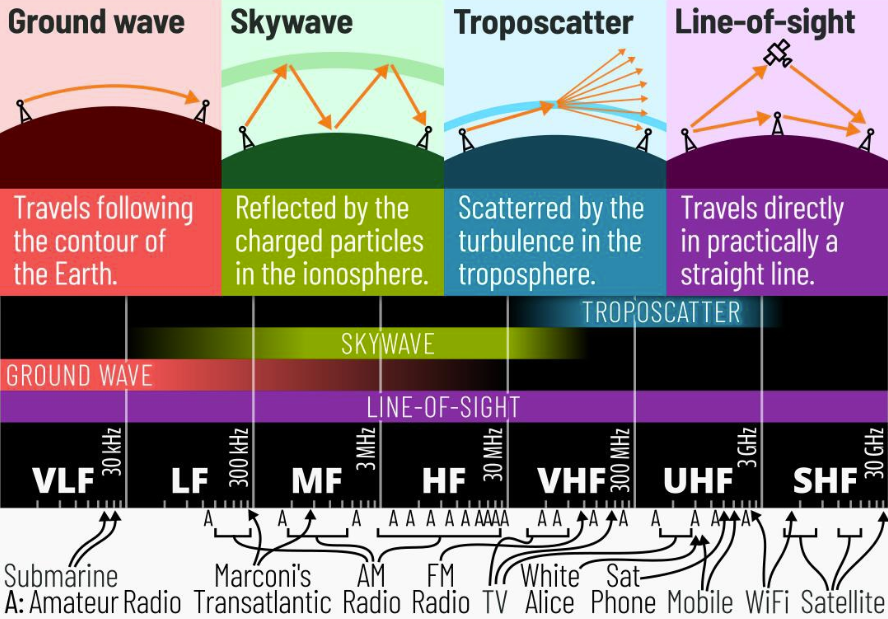
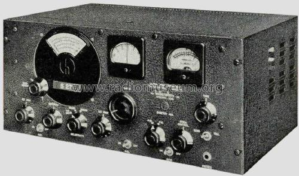
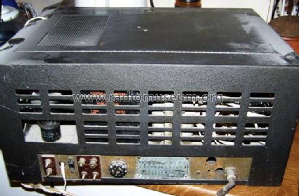
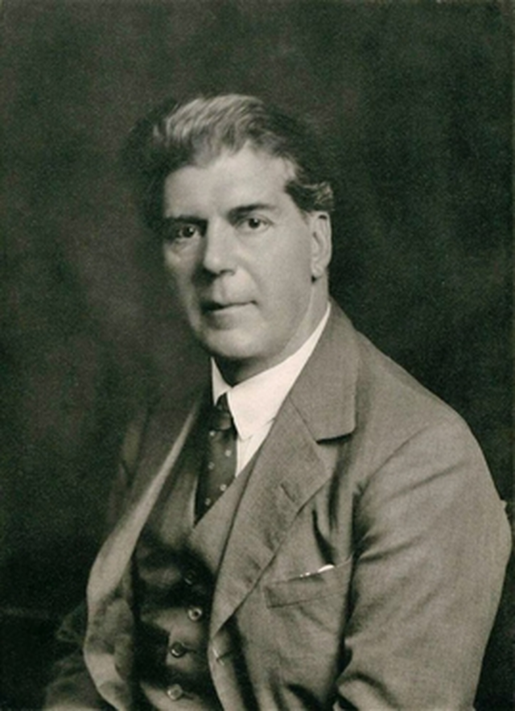
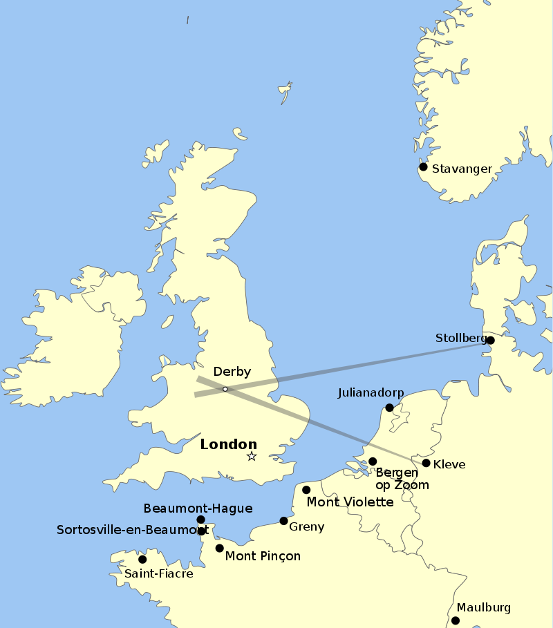

레이더 개발 이야기 (30) - 독일 공군의 비밀
게시: 2023-04-20T06:30:32+09:00
<독일놈들이 그렇게 수학을 잘 하나?> Butt 보고서가 나오기 이전까지는 처칠부터 데본셔의 농부 아저씨까지 영국인들 모두가 로열 에어포스 폭격기들이 독일 주요 공장 지대를 다 때려부수고 있다고 믿었음. 로열 에어포스의 폭격기 사령부 (Bomber Command)에서 그렇게 주장한 것도 이유였지만, 당장 루프트바페 폭격기들이 영국의 주요 공장과 도시를 야밤 중에도 잘만 때려 부수는 것을 직접 경험하고 있었기 때문. 독일 애들이 하는 것을 영국인이라고 못할 이유는 없지 않은가? 그런데 루프트바페의 폭격 패턴을 보면 좀 이상한 구석이 있기는 했음. 대부분 엉뚱한 곳에 폭탄을 떨구긴 하는데, 가끔씩 일부 폭격기 편대는 아주 정확하게 폭탄을 떨구는 것. 처음에는 그냥 '저 편대에는 수학 잘하는 항법사가 있었고 저 편대 항법사는 수학을 잘 못하는 모양'이라고 생각했으나, 점차 이상한 정보들이 들어오기 시작. 그 모든 정보들은 결국 독일이 전파를 이용하여 폭격기들을 유도하는 방법을 개발했다는 의심을 낳게 함. 전파 유도 항법 장치가 WW2 전에는 전혀 없었느냐 하면 그렇지 않음. 일단 로렌츠(Lorenz) 시스템이라는 계기 착륙 유도 장치를 1930년대 초반부터 독일이 개발하여 사용하고 있었음. 그 원리는 간단하면서도 기발. 활주로 끝부분에 일정 간격으로 늘어선 두 개의 지향성 전파 송신기에서 33 MHz의 전파를 나란히 쏘되, 왼쪽에서는 전파 펄스를 점(dot) 형태로 뚜, 뚜, 뚜 하는 식으로 짧게 끊어 쏘고, 오른쪽에서는 띠(dash) 형태로 띠~, 띠~, 띠~ 하는 식으로 길게 끊어 쏘는 것. 이 두 송신기는 하나의 발신원에서 생성된 전파를 duplexer switch를 통해 한번은 왼쪽으로 짧게 보내고 한번은 오른쪽으로 길게 보내는 형식으로 쏘는 것. 활주로를 향해 날아오는 항공기 조종사는 이 주파수에 라디오를 맞춰 듣고 있다가, 들리는 소리가 뚜, 뚜, 뚜이면 자신이 활주로 왼쪽 방향으로 빗겨날고 있다는 것을 알 수 있었고, 반대로 띠~, 띠~, 띠라는 소리가 들리면 오른쪽 방향으로 빗겨나갔다는 것을 알 수 있었음. 들리는 소리가 띠~~~~~ 하는 식으로 끊김없이 들리면 자신의 위치가 왼쪽과 오른쪽 전파가 겹치는 부분, 즉 활주로를 향해 똑바른 위치에 있다는 것으로 판단할 수 있었음. (아래 그림)

그런데 이건 먹구름이 잔뜩 끼어 지상의 활주로를 볼 수 없을 때에 항공기를 유도하기 위한 보조 장치에 불과. 자신의 위치가 활주로의 직선 위치에 있는지만 알 수 있었을 뿐이고 활주로까지의 거리는 전혀 알 수 없었음. 이것만으로 야간 착륙은 불가능. 그러나 실제로는 더 접근하면 활주로를 눈으로 볼 수 있었으니 그거면 충분했던 것. 결정적으로 로렌츠 착륙 유도 시스템의 유효거리는 불과 50km도 안 됨. 그러니 독일에 설치된 송신기로 영국을 폭격하는 하인켈 폭격기들을 유도할 수 있다는 생각을 영국은 전혀 하지 못했음. 그런데 대체 영국군은 무슨 정보를 얻었기에 로렌츠 시스템을 루프트바페가 폭격에 이용하고 있다는 의심을 하게 된 것일까? <쫄리면 취소하시든가> 루프트바페가 천문 항법이 아니라 전파를 이용한 항법으로 영국을 폭격하고 있다는 의심을 하게 된 최초의 계기는 격추된 독일 폭격기 잔해. 조사를 해보니 로렌츠 시스템의 수신기 같은 것이 발견되었는데, 그 전파 수신기가 쓸데없이 고퀄이었던 것. 그냥 야간 착륙 보조 장치 수준을 벗어나 매우 먼 거리에서도 약한 전파를 포착할 수준. 그 뿐만 아니었음. 격추된 루프트바페 폭격기 조종사들과 승무원들을 고문 취조하지는 않았지만, 이들을 가둬놓은 수용소에 몰래 감청 장치를 숨겨두고 이들간의 자유로운 대화를 녹음하여 분석하고 있었는데, 그들의 대화를 분석해보면 뭔가 전파를 이용한 유도 장치가 존재한다는 느낌적 느낌이 들었음. 그리고 결정적으로, 독일이 자랑하는 암호체계 Enigma를 부분적으로 해독하여 얻은 정보 중에는 '폭격 광선' (bombing beam)이라는 단어가 나온 것. 처칠에게까지 이 정보가 보고되자 당연히 처칠은 조사를 지시. 그러나 어떻게? 로열 에어포스의 많은 고위 인사들은 독일에게 그런 기술이 있다는 사실을 믿지 않음. 무엇보다, 정부의 과학 고문인 Frederick Lindemann은 독일에서 영국까지 지향성 전파를 쏜다는 것은 절대 불가능한 일이라고 단언. 지구는 둥그니까 전파가 독일에서 영국까지 오려면 지구의 곡면을 따라 흐르는 200~300 kHz의 저주파를 써야 했는데, 그런 저주파를 지향성으로 쏠 수는 없다는 것. 그러나 이 조사위원회에 참여했던 상용 통신 기업인 Marconi 사의 T. S. Eckersley는 어떻게든 로렌츠 시스템에서 쓰는 30 MHz의 지향성 전파를 지구 곡면을 따라 보낼 수도 있을 것이라고 주장.

위원회 내에서 과학적 주장이 상충되자, 처칠은 그냥 실제 검증을 해보라고 지시. 즉, 로열 에어포스의 Avro Anson 폭격기에 전파 수신기를 달아 독일놈들이 영국 상공으로 전파를 쏘고 있는지 찾아보라는 것. 다른 사람도 아니고 처칠이 지시한 것이니 무조건 따라야 함. 로열 에어포스에서는 부랴부랴 전파 수신기를 구매했는데, 어찌나 서둘렀는지 그냥 미제 아마추어 무선 통신용 Hallicrafters S-27 수신기를 런던 시내의 전파상에서 샀다고.

(Avro Anson 폭격기)
 
(미국에서 만든 민간용 Hallicrafters S-27 수신기)
그런데 막상 전파 탐지를 위해 앤슨 폭격기가 이륙할 때가 되자, 에커슬리가 급격히 쫄아듬. 그는 30 MHz의 전파가 지구 곡면을 따라 휘어 올 수도 있다는 주장을 철회하고 앤슨 폭격기의 이륙을 취소하자고 제안. 그러나 그 조사위원장인 Jones는 이제 와서 겁을 먹고 쫄아드는 것은 말도 안 되며 만약 진짜 취소한다면 누가 취소시켰는지 처칠에게 반드시 보고하겠다고 협박하여 앤슨 폭격기를 이륙시킴.

(이 양반이 토마스 에커슬리. 이 양반이 마르코니 사에서 근무하며 평생을 무선 통신 기술 분야에서 종사해놓고도 마지막 순간에 간담이 쪼그라든 것이 좀 이상하게 생각될 수도 있는데, 이 양반의 배경을 보면 좀 이해가 감. 이 분은 박사도 아니고 석사도 아니며 심지어 최종 학력이 문학사(Bachelor of Arts). 캠브릿지 대학에서 수학과 학부를 졸업한 것이 정규 교육의 전부. WW1 때 통신 장교로 일하면서 무선 통신에 흥미를 가지게 된 것이 이 양반이 마르코니 사에서 근무하게 된 이유. 그러니 실무 경험을 바탕으로 저명한 물리학 박사 학위자에게 대들었다가 나중에 자신감이 점점 쪼그라든 것도 이해가 가긴 함.)
결과는 31.5 MHz의 독일 전파를 성공적으로 탐지. 루프 안테나를 이리저리 돌려가며 탐지를 해보니 독일 클레브(Kleve) 바향에서 날아온 전파. 이어서 스톨베르크(Stollberg)에서 날아오는 교차용 전파도 탐지. 이 지향성 전파의 방향들을 선으로 그어보니 이 두 전파는 정확하게 Derby에 위치한 Rolls-Royce 공장 상공에서 교차. 이 곳은 당시 영국을 지키는 날개인 Supermarine Spitfire 전투기의 엔진인 Merlin 엔진을 생산하던 유일한 공장. 독일놈들의 뛰어난 항법 실력의 정체가 드러난 순간.

(독일은 로렌츠 시스템이 항공기가 정해진 항로의 좌우로 벗어나는 것을 막아줄 뿐, 목적지에 도착했는지 여부는 전혀 알려줄 수 없다는 약점을 저렇게 2개 beam이 교차시킴으로써 극복. 클레브는 네덜란드와의 국경 지대에, 스톨베르크는 덴마크와의 국경 지대에 위치했는데, 클레브에서 발사한 beam을 따라 날던 폭격기들에게 스톨베르크의 beam이 감지되면 거기가 바로 폭탄을 떨어뜨릴 장소였음. 처음에는 저렇게 2곳에서 시작했지만, 프랑스 점령 이후엔 프랑스 해안 곳곳에도 저 폭격기 유도용 전파 송신기를 배치.)
그런데 독일놈들은 어떻게 31.5 MHz의 고주파를 지구 곡면을 따라 흐르도록 만들 수 있었을까? 결론적으로는 당연히 그렇게 못했음. 어차피 고공 폭격을 했으므로, 그냥 꽤 높은 상공에서 두 전파가 교차하도록 만들면 전파가 굳이 지구 곡면을 따라 흘러갈 필요가 없었던 것. 과학자들이 자기 아는 것에만 집착하는 바람에 그렇게 간단한 사실을 놓친 것. 한편, 이 사실이 드러나자 로열 에어포스는 '우리의 우수한 항법사들은 저런 컨닝 장치 없이도 성공적으로 임무를 수행했으니 우리 항법사들 실력이 독일놈들보다 뛰어난 것'이라며 자화자찬 모드에 들어갔으나... '독일 항법사들도 못하는 것을 우리 항법사들이 해낸다고?'라는 합리적 의심을 품은 정부 고위층에서 정밀 조사를 시작. 그 결과가 바로 Butt 보고서. 이로써 로열 에어포스 폭격기들이 얼마나 뻘짓을 하고 있었는지도 뽀록이 남. 그와는 별도로 로열 에어포스는 독일의 항법용 전파 유도 시스템에 대해 코드명 'Headache' (두통)을 붙이고 어떻게 대응할 것인지 연구에 들어감. 그 대응책의 코드명은 'Aspirin' (아스피린). 그 이야기는 다음에.